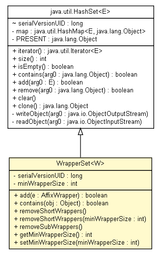

tud.iir.extraction.entity
Class WrapperSet<W>

java.lang.Object
 java.util.AbstractCollection<E>
java.util.AbstractSet<E>
java.util.HashSet<AffixWrapper>
tud.iir.extraction.entity.WrapperSet<W>
java.util.AbstractCollection<E>
java.util.AbstractSet<E>
java.util.HashSet<AffixWrapper>
tud.iir.extraction.entity.WrapperSet<W>
- Type Parameters:
W -
- All Implemented Interfaces:
- java.io.Serializable, java.lang.Cloneable, java.lang.Iterable<AffixWrapper>, java.util.Collection<AffixWrapper>, java.util.Set<AffixWrapper>
class WrapperSet<W>
- extends java.util.HashSet<AffixWrapper>
A set of wrappers.
| Methods inherited from class java.util.HashSet |
clear, clone, isEmpty, iterator, remove, size |
| Methods inherited from class java.util.AbstractSet |
equals, hashCode, removeAll |
| Methods inherited from class java.util.AbstractCollection |
addAll, containsAll, retainAll, toArray, toArray, toString |
| Methods inherited from class java.lang.Object |
finalize, getClass, notify, notifyAll, wait, wait, wait |
| Methods inherited from interface java.util.Set |
addAll, containsAll, equals, hashCode, removeAll, retainAll, toArray, toArray |
serialVersionUID
private static final long serialVersionUID
- See Also:
- Constant Field Values
minWrapperSize
private int minWrapperSize
WrapperSet
WrapperSet()
add
public boolean add(AffixWrapper e)
- Specified by:
add in interface java.util.Collection<AffixWrapper>- Specified by:
add in interface java.util.Set<AffixWrapper>- Overrides:
add in class java.util.HashSet<AffixWrapper>
contains
public boolean contains(java.lang.Object obj)
- Specified by:
contains in interface java.util.Collection<AffixWrapper>- Specified by:
contains in interface java.util.Set<AffixWrapper>- Overrides:
contains in class java.util.HashSet<AffixWrapper>
removeShortWrappers
public void removeShortWrappers()
removeShortWrappers
public void removeShortWrappers(int minWrapperSize)
removeSubWrappers
public void removeSubWrappers()
- No prefix can have another prefix as suffix.
No suffix can have another suffix as prefix.
getMinWrapperSize
public int getMinWrapperSize()
setMinWrapperSize
public void setMinWrapperSize(int minWrapperSize)